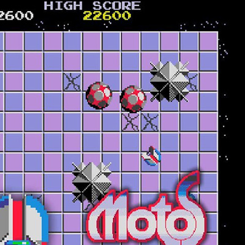
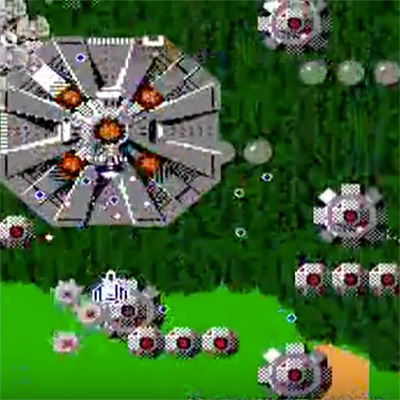
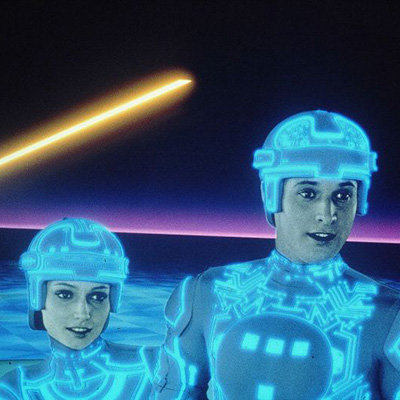

"GRAVISPHERE"
©2010, 2020 TPM. CO SOFT WORKS & 米屋のチャチャチャ
music & sound by:
TPM. CO SOFT WORKS (www.tpmcosoft.com)
program & graphics by:
米屋のチャチャチャ (www.mameson.com)
"GRAVISPHERE" is a remade version of
"SPHERE" ©1986 TPM. CO SOFT WORKS

傑作パズル。
スマホやタブレットでは、端末を傾けることで、操作できます。 ダイアログで許可・拒否を選択できます。 次回からは許可・拒否のダイアログが出ません。 ブラウザのタブを一度閉じれば、許可・拒否のダイアログをもういちど出すことができます。
ダイアログを出すのは、ブラウザの場合のみに。
2020/02/18
Android で傾き動作せず。
2020/02/16
http ではダイアログが出ずに、こっそり拒否されることを確認しました。
自分のサーバは https にできないので、github を使わせていただきます。
2020/02/12
モーションセンサー使用許可のダイアログは、 touchstart / mousedown / pointerdown では出せなくて、 touchend / mouseup / pointerup なら出せることが分かりました。
スマホのブラウザで、デバイスの傾きを検出できなくなっている。 iOS 12.2 (March 25, 2019) から、ブラウザの設定が必要になった。 iOS 13.0 (September 19, 2019) から、モーションセンサー使用許可のダイアログが必要になった。
2019/12/31
・スマホで文字が大きくならないように。
body{ -webkit-text-size-adjust: 100%;}
2019/12/30
・Chrome やスマホでのページレイアウトを調整。
・visibilitychange で BGM を止める。
2018/11/04
・skeleton_2.js。ゲーム画面が大きくなりすぎないように。
2016/10/26
・WebAudio は XMLHttpRequest やめて Base64 に。
・skeleton.js
2016/06/07 ・伸縮 canvas 方式。
2016/05/15
・screen.orientation.lock() をプロミスに。
2016/04/28
・ScriptProcessorNode → AudioBufferSourceNode。
・音・画像リソースのロード失敗時にリトライ。
・Windows 用 viewport と pointerdown。
・setInterval → requestAnimationFrame。
・タッチとマウスを 0.5 秒間排他。
・永続をスリム化。
2015/11/20 ・HTML5 版。
com.mameson.gsa (Android)
アイコン ★
2016/07/09 1 (1) WebView。Firebase。
＝＝＝＝＝＝ gaf → gsa ＝＝＝＝＝＝
com.mameson.gaf (Android)
アイコン ★ ★ 画面 ★ ★ ★ ★ ★ 広告 ★ ★ ★
2016/07/09 Google Play から削除。
2014/04/12 1.2 傾きセンサー。
2014/04/07 1.1 バグ訂正。
2012/08/06 1.0
アイコン ★
{kind=link}
2016/07/09 1 (1) WebView。Firebase。
＝＝＝＝＝＝ gaf → gsa ＝＝＝＝＝＝
com.mameson.gaf (Android)
アイコン ★ ★ 画面 ★ ★ ★ ★ ★ 広告 ★ ★ ★
{kind=link}
{kind=link}
{kind=link}
{kind=link}
{kind=link}
{kind=link}
{kind=link}
{kind=link}
{kind=link}
{kind=link}
2016/07/09 Google Play から削除。
2014/04/12 1.2 傾きセンサー。
2014/04/07 1.1 バグ訂正。
2012/08/06 1.0
com.mameson.gst (iOS)
2016/11/01 2 (2) WKWebView。
2016/06/08 1.0 (1) UIWebView。AdMob。Firebase。
＝＝＝＝＝＝ gravisphere → gst ＝＝＝＝＝＝
com.mameson.gravisphere (iOS) (有料)
アイコン ★ 画面 ★ ★ ★ ★ ★ ★
the iTunes Stoe から削除。
2016/06/08 1.3 UIWebView。AdMob。Firebase。
2011/08/28 1.2 洗練された効果音。マルチタスク。
2011/01/26 1.1 iPad / iPhone 4。
2010/02/23 0.1
2016/11/01 2 (2) WKWebView。
2016/06/08 1.0 (1) UIWebView。AdMob。Firebase。
＝＝＝＝＝＝ gravisphere → gst ＝＝＝＝＝＝
com.mameson.gravisphere (iOS) (有料)
アイコン ★ 画面 ★ ★ ★ ★ ★ ★
{kind=link}
{kind=link}
{kind=link}
{kind=link}
{kind=link}
{kind=link}
{kind=link}
the iTunes Stoe から削除。
2016/06/08 1.3 UIWebView。AdMob。Firebase。
2011/08/28 1.2 洗練された効果音。マルチタスク。
2011/01/26 1.1 iPad / iPhone 4。
2010/02/23 0.1
＜参考デザイン＞
  